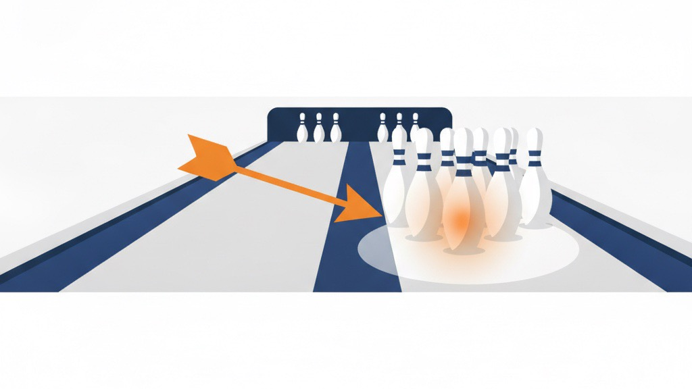

🎯
センターピンには、お金を惜しまない
―― 倹約家が、いちばん大事にしているお金の使い方 ――
普段は徹底して締める。けれど、勝敗を決める一点にだけは惜しまない。 これが、ヤシノミのお金の使い方の軸です。ボウリングでいう“センターピン”――そこさえ倒れれば後ろが連鎖で倒れる一本に、手とお金を集中させます。
「全部に少しずつ」が、いちばんもったいない
お金をかけられないとき、人はつい全部に少しずつ配分します。画像も、広告も、パッケージも、そこそこに。一見、堅実に見えます。
でも、そこそこを並べても、結果はそこそこにしかなりません。薄く広げたお金は、どこにも効かないまま消えていくことが多いのです。限られた資金ほど、「ここだ」という一点に寄せる勇気が要ります。
どこがセンターピンか
では、何が“センターピン”なのか。私たちが扱うEC・物販でいえば、勝敗を分けるのは次のような一点です。
惜しまない（＝後ろを倒す一本）
お客様が最初に見る商品画像、買う決め手になるレビュー・信頼、そして商品そのものの力。ここは結果に直結するので、手間もお金もかけます。締める（＝結果に響かない場所）
立派なオフィス、過剰な装飾、なくても回る作業。ここは徹底して身軽にします。固定費を増やさないことが、いざというときの体力になります。大事なのは、締めるためにこそ、張る場所を決めるという順番です。どこに集中するかが決まると、それ以外を気持ちよく削れます。

なぜ「数字」と「キャッシュ」にこだわるのか
センターピンを見極めるには、「どこが効いていて、どこが垂れ流しか」が見えていないといけません。だから私たちは、お金の流れを見える化することにこだわります。
見えていないと、惜しむべき場所で見栄を張り、張るべき場所で締めてしまう。逆をやってしまうのが、いちばん怖いのです。手元の現金を守りながら、勝負どころにだけ集中投下する。そのための土台が、数字とキャッシュの見える化です。
倹約と投資は、矛盾しない
倹約と投資は、一見すると矛盾して見えるかもしれません。でも、自分の中では一本の線でつながっています。普段はとことん倹約し、勝負どころでは思い切って張る。倹約は、張るための準備です。
この順番を守れると、少ない資金でも“効くところにだけ効く”使い方ができます。お金の量ではなく、当てる場所で差がつきます。